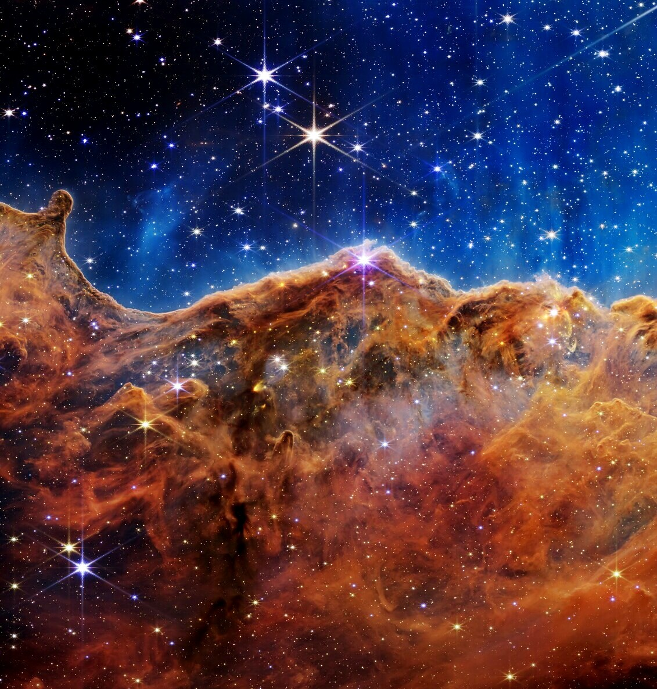
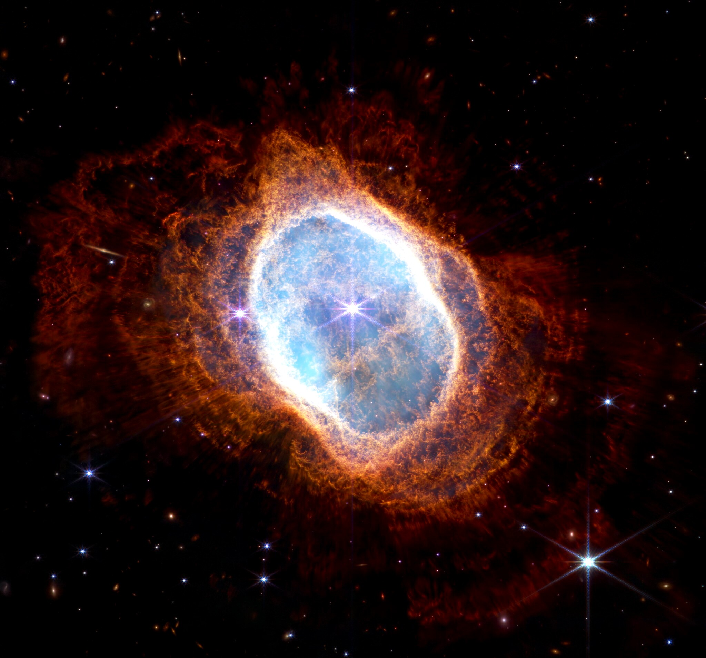
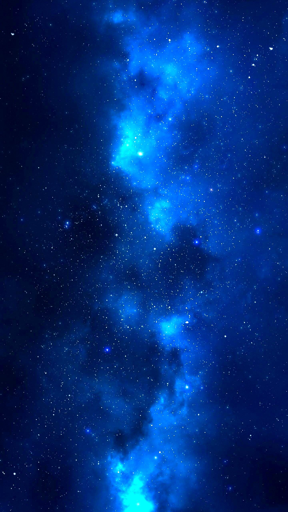
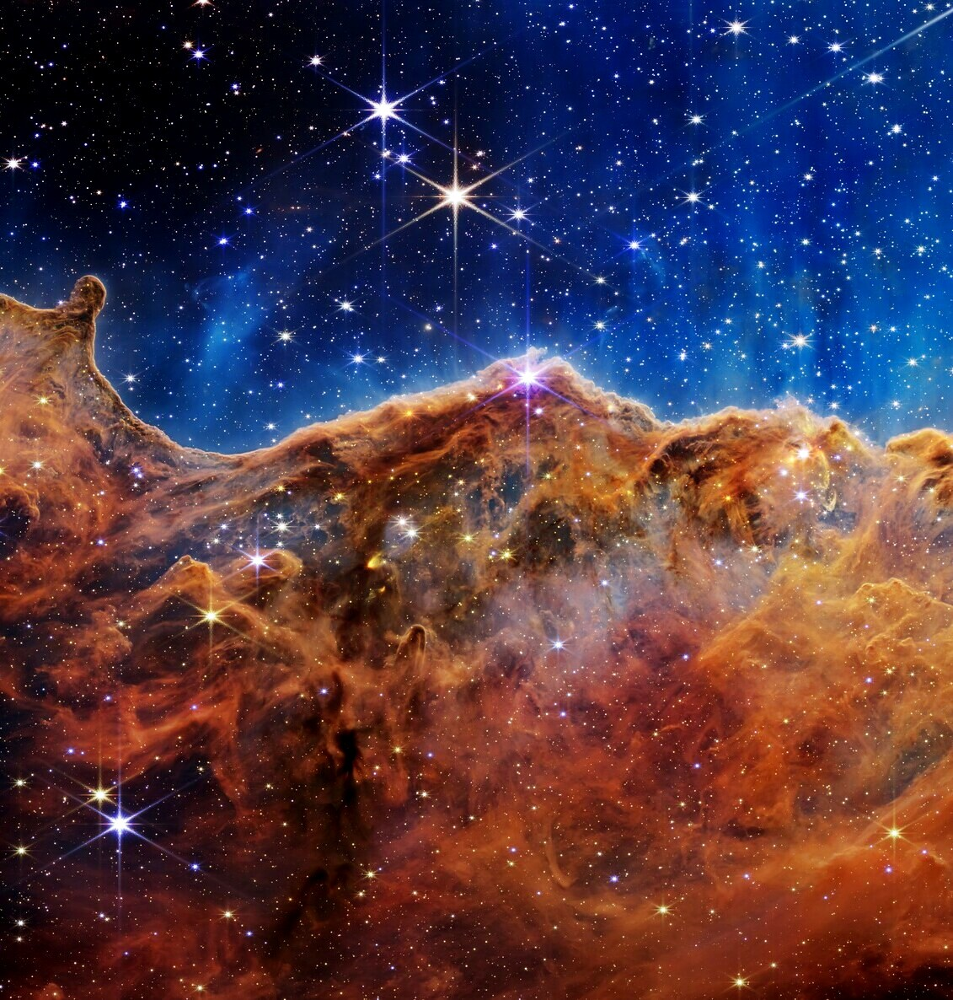
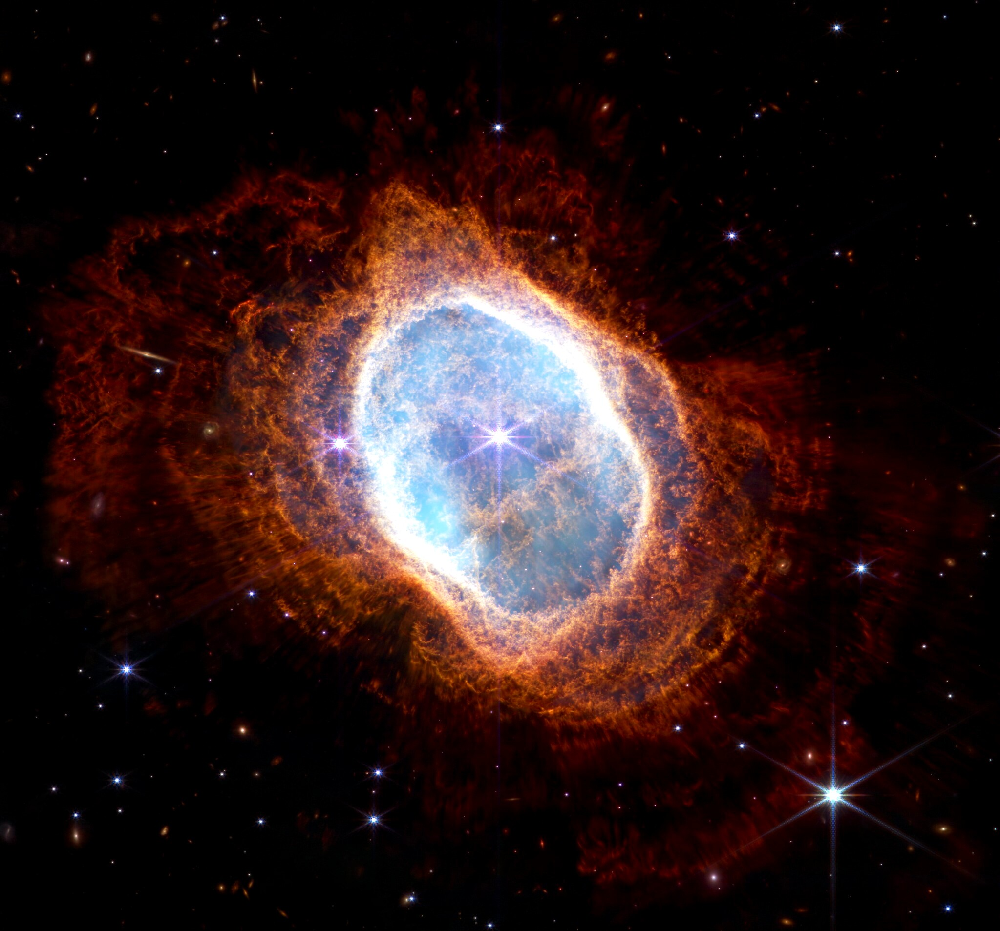
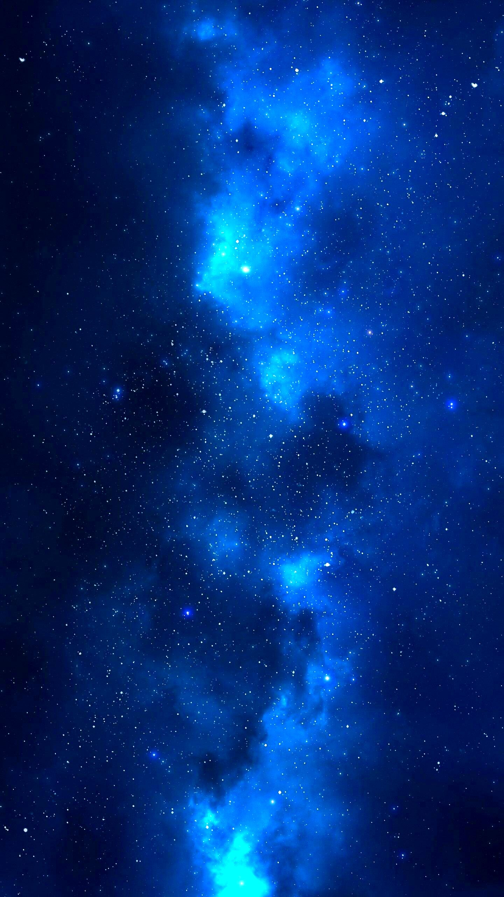

La astronomía, es la ciencia natural que estudia los cuerpos celestes(estrellas, planetas, nebulosas, asteroides, cometas...) del universo, incluido los satélites naturales, la materia oscura, las galaxias entre otras entidades astronómicas.
También estudia los fenómenos astronómicos ligados a ellos, como las supernovas, los cuásares, los púlsares, la radiación cósmica de fondo, los agujeros negros, entre otros, así como las leyes naturales que las rigen.
Nuestro proyecto tiene como intencionalidad principal, poder enseñar las maravillas que rodean nuestro planeta, y la practicidad adecuada para ser de interés para todas las edades.
También estudia los fenómenos astronómicos ligados a ellos, como las supernovas, los cuásares, los púlsares, la radiación cósmica de fondo, los agujeros negros, entre otros, así como las leyes naturales que las rigen.
Nuestro proyecto tiene como intencionalidad principal, poder enseñar las maravillas que rodean nuestro planeta, y la practicidad adecuada para ser de interés para todas las edades.
Haciendo énfasis en los cuerpos celestes, los cuerpos celestes son todos aquellos objetos naturales que pertenecen al universo y que
pueden interactuar con otro cuerpo, debido a la fuerza de gravedad (orbitándolo o siendo
orbitados).
En latín, caelestis quiere decir perteneciente al cielo. De aquí que los cuerpos celestes sean todos aquellos componentes que están en el espacio exterior. Por definición, el término incluye a todo lo que no está dentro de nuestro planeta Tierra, lo que implica que pueden estar dentro o fuera de nuestra galaxia.
Nombramos "estrella" anteriormente, pero ¿Qué son? Llamamos estrella a cualquier cuerpo celeste que produce luz y calor debido a la actividad de su núcleo y que se encuentra conformado por helio e hidrógeno, principalmente. La estrella más conocida es el sol, a la cual debemos la luz de todos los días. La humanidad observó las estrellas desde sus inicios tempranos, y quiso ver en ellas mensa jes ocultos o señales de sus dioses.
Las estrellas de amaño más común son estrellas del tamaño del Sol. Después de unos diez mil millones de años, una vez que se han quedado sin hidrógeno, se convierten lentamente en enanas blancas. Las estrellas masivas tienen un final diferente reservado exclusivamente para ellas. Si una estrella es aproximadamente ocho veces más grande que el Sol, si vida terminará en una explosión masiva conocida como supernova. Recuerda que cuanto más grande es la estrella, más rápido se quema a través del hidrógeno. Cuando se les acaba el hidrógeno, producen hierro como resultado de una serie de reacciones químicas.
Cuando eso sucede, el núcleo colapsa en cuestión de segundos de cinco mil millas de ancho a solo doce. Alcanza una temperatura de cien mil millones de grados y la supernova se vuelve más brillante que toda una galaxia.
En latín, caelestis quiere decir perteneciente al cielo. De aquí que los cuerpos celestes sean todos aquellos componentes que están en el espacio exterior. Por definición, el término incluye a todo lo que no está dentro de nuestro planeta Tierra, lo que implica que pueden estar dentro o fuera de nuestra galaxia.
Nombramos "estrella" anteriormente, pero ¿Qué son? Llamamos estrella a cualquier cuerpo celeste que produce luz y calor debido a la actividad de su núcleo y que se encuentra conformado por helio e hidrógeno, principalmente. La estrella más conocida es el sol, a la cual debemos la luz de todos los días. La humanidad observó las estrellas desde sus inicios tempranos, y quiso ver en ellas mensa jes ocultos o señales de sus dioses.
Las estrellas de amaño más común son estrellas del tamaño del Sol. Después de unos diez mil millones de años, una vez que se han quedado sin hidrógeno, se convierten lentamente en enanas blancas. Las estrellas masivas tienen un final diferente reservado exclusivamente para ellas. Si una estrella es aproximadamente ocho veces más grande que el Sol, si vida terminará en una explosión masiva conocida como supernova. Recuerda que cuanto más grande es la estrella, más rápido se quema a través del hidrógeno. Cuando se les acaba el hidrógeno, producen hierro como resultado de una serie de reacciones químicas.
Cuando eso sucede, el núcleo colapsa en cuestión de segundos de cinco mil millas de ancho a solo doce. Alcanza una temperatura de cien mil millones de grados y la supernova se vuelve más brillante que toda una galaxia.
Los agujeros negros son los restos fríos de antiguas estrellas, tan densas que ninguna partícula material, ni siquiera la luz, es capaz de escapar a su poderosa fuerza gravitatoria.
Los agujeros negros representan la última fase en la evolución de enormes estrellas que fueron al menos de 10 a 15 veces más grandes que nuestro sol.
Los agujeros negros siguen siendo uno de los fenómenos cosmológicos más atractivos tanto para muchos investigadores como para el gran público. ¿Cómo se forman los agujeros negros? Cuando las estrellas gigantes alcanzan el estadio final de sus vidas estallan en cataclismos conocidos como supernovas.
Tal explosión dispersa la mayor parte de la estrella al vacío espacial. En estrellas jóvenes, la fusión nuclear crea energía y una presión exterior constante que se encuentra en equilibrio con la fuerza de gravedad interior que produce la propia masa de la estrella. Sin embargo, en los restos de una supernova no hay una fuerza que se resista a la gravedad, por lo que la estrella empieza a replegarse sobre sí misma.
Sin una fuerza que frene la gravedad, el emergente agujero negro encoje hasta un volumen cero, en cuyo punto pasa a ser infinitamente denso. Incluso la luz de dicha estrella es incapaz de escapar a su inmensa fuerza gravitatoria, que se ve atrapada en órbita, por lo que la oscura estrella se conoce con el nombre de agujero negro.
Los agujeros negros representan la última fase en la evolución de enormes estrellas que fueron al menos de 10 a 15 veces más grandes que nuestro sol.
Los agujeros negros siguen siendo uno de los fenómenos cosmológicos más atractivos tanto para muchos investigadores como para el gran público. ¿Cómo se forman los agujeros negros? Cuando las estrellas gigantes alcanzan el estadio final de sus vidas estallan en cataclismos conocidos como supernovas.
Tal explosión dispersa la mayor parte de la estrella al vacío espacial. En estrellas jóvenes, la fusión nuclear crea energía y una presión exterior constante que se encuentra en equilibrio con la fuerza de gravedad interior que produce la propia masa de la estrella. Sin embargo, en los restos de una supernova no hay una fuerza que se resista a la gravedad, por lo que la estrella empieza a replegarse sobre sí misma.
Sin una fuerza que frene la gravedad, el emergente agujero negro encoje hasta un volumen cero, en cuyo punto pasa a ser infinitamente denso. Incluso la luz de dicha estrella es incapaz de escapar a su inmensa fuerza gravitatoria, que se ve atrapada en órbita, por lo que la oscura estrella se conoce con el nombre de agujero negro.
Dejando de lado los acontecimientos extravagantes como explosiones de estrellas enormes y agujeros negros, por qué no hablar de un aspecto del universo que yace en todas partes, comúnmente llamado asteroides.
Los asteroides son los restos de la formación de nuestro sistema solar. Nuestro sistema solar apareció hace unos 4600 millones de años, con el derrumbe de una gran nube de gas y polvo. Cuando esto sucedió, la mayor parte del material cayó al centro de la nube y formó el Sol.s Parte del polvo en condensación dentro de la nube se convirtió en los planetas. Los objetos del cinturón de asteroides nunca tuvieron la oportunidad de incorporarse a los planetas, y son restos de ese tiempo lejano en el que se formaron los planetas.
Los asteroides se clasifican en tres grupos, según su ubicación y su tipo de agrupamiento:
Los asteroides del Cinturón de asteroides. Son los que orbitan en el espacio o frontera, entre Marte y Júpiter. El cinturón conglomera a la mayoría de los asteroides del Sistema Solar.
Los asteroides Centauros. Son lo que orbitan en la frontera entre Júpiter o Saturno, y entre Urano o Neptuno, respectivamente.
Los asteroides Troyanos. Son los que comparten la órbita de un planeta, pero no suelen impactar.
Los cometas son objetos también rocosos con gran proporción de hielo y otros materiales volátiles que se formaron en los exteriores del sistema solar pero cuyas órbitas los llevan actualmente a acercarse considerablemente al Sol describiendo trayectorias elípticas. Al acercarse al Sol los materiales volátiles de su superficie pasan a formar una cola a su alrededor que los caracteriza y permite distinguirlos y observarlos en ocasiones a simple vista. El más famoso de éstos es el cometa Halley, que visita el interior del sistema solar cada 75 años aproximadamente.
Los asteroides son los restos de la formación de nuestro sistema solar. Nuestro sistema solar apareció hace unos 4600 millones de años, con el derrumbe de una gran nube de gas y polvo. Cuando esto sucedió, la mayor parte del material cayó al centro de la nube y formó el Sol.s Parte del polvo en condensación dentro de la nube se convirtió en los planetas. Los objetos del cinturón de asteroides nunca tuvieron la oportunidad de incorporarse a los planetas, y son restos de ese tiempo lejano en el que se formaron los planetas.
Los asteroides se clasifican en tres grupos, según su ubicación y su tipo de agrupamiento:
Los asteroides del Cinturón de asteroides. Son los que orbitan en el espacio o frontera, entre Marte y Júpiter. El cinturón conglomera a la mayoría de los asteroides del Sistema Solar.
Los asteroides Centauros. Son lo que orbitan en la frontera entre Júpiter o Saturno, y entre Urano o Neptuno, respectivamente.
Los asteroides Troyanos. Son los que comparten la órbita de un planeta, pero no suelen impactar.
Los cometas son objetos también rocosos con gran proporción de hielo y otros materiales volátiles que se formaron en los exteriores del sistema solar pero cuyas órbitas los llevan actualmente a acercarse considerablemente al Sol describiendo trayectorias elípticas. Al acercarse al Sol los materiales volátiles de su superficie pasan a formar una cola a su alrededor que los caracteriza y permite distinguirlos y observarlos en ocasiones a simple vista. El más famoso de éstos es el cometa Halley, que visita el interior del sistema solar cada 75 años aproximadamente.
Si te interesa saber más sobre Astronomía o te gustaría saber sobre algo más relacionado al universo, no dudes en mandarnos un mensaje!